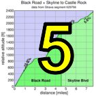
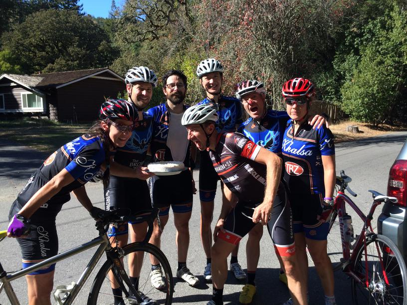

|
 |
|  |
| Team Brown Zone gets down to work (Rich Brown) |
The Low-Key Hillclimbs went short this week as we did our first multi-climb day, enabled by GPS timing. And while the day may have lacked the attraction of a mass start and friendly volunteers, this was partially compensated by the novel route and a surplus of data.
Ed Miller, 1995 Low-Key alum, rode the course on Tuesday and self-timed: his times on the hills were 7:21,4:55,3:01,4:27,7:31,9:18, for a total time of 36:33. He reminded your humble coordinator that I'd led a similar Western Wheelers ride in 1995.
Sam Beal rode the course in "time trial mode" and timed himself at 1:26:13.
For the course itself, the story has been ironining out the kinks. In particular, Garmin Edge 500 data from Joaquin proved to be too unreliable for automatic timing, so Joaquin, arguably the hardest climb of the day, had to be neutralized. Total times were just taken from the other time segments added together. Sincere apologies to those who drilled Joaquin, but the GPS fates were not on Low-Keys side there.
Then there was the time budget from the top of Cerventes to the pre-start of Golden Oak West. That was set to 10 minutes, which is enough for riding solo, but following a regroup by one group at the top of Cerventes, the first riders to the top of Cerventes exceeded the time. I increased the time budget to 15 minutes for this part, since the intent of the time budgets is not to stop people from riding together. All of the other time budgets were fine.
So the experiment that was Portola Valley Hills was a mixed success. On the positive side, all riders reported having a great time, riding on roads which Low-Key had not before ridden, enjoying the very different experience which short hills provide. And unlike previous Low-Key events, this was a series of efforts, one after another, with recovery a key aspect. It's something we've wanted to do for a long time, and we're glad we did.
On the down side, it was a bit ahead of its time. The GPS units sold today are up to the task, but the Garmin Edge 500 simply wasn't universally up to the task. In a few years, as newer GPS units displace the old, this model will only become more feasible.
Until then, the key is to pick the climbs carefully. The start and finish lines should have clear views of the sky, maximizing the chances for satellite reception. And twisty climbs like Joaquin are best avoided.
So while net times don't have the sort of precision Low-Key has provided in the past, it was a good competition. Lessons learned, we'll see this sort of thing again.
Thanks to the 70 riders who came out today, far exceeding expectations, and all navigated the complicated route without issue! Special thanks to Franz and Anne Kelsch for their fantastic road chalking, and special congratulations to Low-Key super-volunteer Lane Parker for riding his 52nd century of 2013 on his birthday ride the same day.
KOM special mention qualifiers indicated with orange background. Discarded scores are crossed out. Volunteer weeks are indicated with V. Ride credit weeks are indicated with RC. V and RC weeks are equivalent for scoring.
| pl | # | name | team | cat | time | mph | fph | score |
|---|---|---|---|---|---|---|---|---|
| 1 | 126 | Lisa Penzel | The Brown Zone | 45+ | 21:03.63 | 8.40 | 4595 | 120.66 |
| 2 | 35 | Sugar Brown | The Brown Zone | Fat Camp | 24:04.22 | 7.35 | 4021 | 108.82 |
| 3 | 27 | Kate Bergeron | Diablo | 40+ | 24:26.97 | 7.24 | 3958 | 107.52 |
| 4 | 147 | Marty Scott | LGBRC | 55+ | 24:40.63 | 7.17 | 3922 | 106.75 |
| 5 | 209 | Janet Gardner | Sr's & Mr's of No Mercy | 45+ | 24:49.32 | 7.13 | 3899 | 106.27 |
| 6 | 301 | Amy Bruski | Sr's & Mr's of No Mercy | 35+ | 25:36.11 | 6.91 | 3780 | 103.75 |
| 7 | 223 | Eva Silverstein | Western Wheelers | 40+ | 25:43.93 | 6.88 | 3761 | 103.35 |
| 8 | 318 | Trish Pacheco | Sr's & Mr's of No Mercy | 45+ | 25:48.45 | 6.86 | 3750 | 103.12 |
| 9 | 404 | Heidi Fraser | Cushman & Wakefield Racing | 50+ | 32:19.42 | 5.48 | 2994 | 86.64 |
reference time for division Women = 26:51.12
| pl | # | name | team | cat | time | mph | fph | score |
|---|---|---|---|---|---|---|---|---|
| 1 | 49 | David Collet | Pen Velo/Pomodoro | 40+ | 17:07.60 | 10.33 | 5651 | 122.47 |
| 2 | 132 | Stefano Profumo | Bike Trip/Symantec | 35+ | 17:37.99 | 10.04 | 5489 | 119.74 |
| 3 | 53 | Tracy Colwell | Team Colwell | 45+ | 17:38.01 | 10.04 | 5488 | 119.74 |
| 4 | 403 | Scott Frake | Alto Velo | 50+ | 17:45.75 | 9.96 | 5449 | 119.07 |
| 5 | 73 | Chris Furgiuele | Studio Velo Racing | 40+ | 17:58.71 | 9.85 | 5383 | 117.96 |
| 6 | 152 | Daryl Spano | San Jose Bike Club | 45+ | 18:16.00 | 9.69 | 5298 | 116.52 |
| 7 | 207 | Robert Easley | Sr's & Mr's of No Mercy | 45+ | 18:19.09 | 9.66 | 5283 | 116.26 |
| 8 | 409 | Bill Laddish | Team CVC | 40+ | 18:21.92 | 9.64 | 5270 | 116.03 |
| 9 | 14 | Rich McLovin Brown | The Brown Zone | 35+ | 18:24.76 | 9.61 | 5256 | 115.80 |
| 10 | 402 | Chris Evans | Pen Velo/Pomodoro | 30+ | 18:33.44 | 9.54 | 5215 | 115.10 |
| 11 | 31 | Blue Brown | The Brown Zone | 35+ | 18:51.85 | 9.38 | 5130 | 113.65 |
| 12 | 114 | Shahram Moatazedi | LGBRC | 40+ | 19:11.86 | 9.22 | 5041 | 112.12 |
| 13 | 83 | Rich Hill | LGBRC | 45+ | 19:21.95 | 9.14 | 4997 | 111.37 |
| 14 | 32 | Habañero Brown | The Brown Zone | Wheel Horse | 19:30.97 | 9.07 | 4959 | 110.71 |
| 15 | 316 | Bogdan Marian | 30+ | 19:47.88 | 8.94 | 4888 | 109.49 | |
| 16 | 412 | Kieran Sherlock | Western Wheelers | 45+ | 20:02.40 | 8.83 | 4829 | 108.46 |
| 17 | 327 | Brandon Smith | Team CVC | 25+ | 20:10.05 | 8.78 | 4799 | 107.93 |
| 18 | 98 | Michael Kowalchuk | 25+ | 20:10.22 | 8.78 | 4798 | 107.92 | |
| 19 | 411 | Lucas Pereira | 40+ | 20:11.88 | 8.76 | 4792 | 107.81 | |
| 20 | 156 | Todd Studenicka | San Jose Bike Club | 45+ | 20:24.06 | 8.68 | 4744 | 106.98 |
| 21 | 204 | Bryn Dole | Low-Key | 40+ | 20:34.88 | 8.60 | 4702 | 106.25 |
| 22 | 58 | Andy Crews | Diablo | 40+ | 20:37.75 | 8.58 | 4691 | 106.06 |
| 23 | 166 | William Yee | Team CVC | 35+ | 20:44.89 | 8.53 | 4665 | 105.59 |
| 24 | 95 | Mark King | Equipe Flamme Rouge | 45+ | 21:09.58 | 8.36 | 4574 | 104.00 |
| 25 | 410 | Paul McKenzie | Sr's & Mr's of No Mercy | 55+ | 21:12.75 | 8.34 | 4562 | 103.80 |
| 26 | 79 | Bill Harkola | Pen Velo/Pomodoro | 55+ | 21:26.07 | 8.26 | 4515 | 102.97 |
| 27 | 212 | Peter Ingram | Steely Man | 55+ | 21:38.32 | 8.18 | 4473 | 102.21 |
| 28 | 408 | Tom K. | Palo Verde Velo | 22:19.93 | 7.93 | 4334 | 99.75 | |
| 29 | 171 | Phil Lovaglio | Lyme Zone | 55+ | 22:20.22 | 7.92 | 4333 | 99.73 |
| 30 | 122 | Bart Niechwiej | 35+ | 22:34.61 | 7.84 | 4287 | 98.91 | |
| 31 | 135 | Mihai R. | 30+ | 22:40.74 | 7.80 | 4267 | 98.57 | |
| 32 | 300 | Billy Bob Brown | The Brown Zone | 50+ | 22:42.18 | 7.80 | 4263 | 98.49 |
| 33 | 12 | Will von Kaenel | LGBRC | 55+ | 22:56.72 | 7.71 | 4218 | 97.68 |
| 34 | 62 | Mike Davis | LGBRC | 45+ | 22:58.83 | 7.70 | 4211 | 97.57 |
| 35 | 37 | Scott Byer | 45+ | 23:14.91 | 7.61 | 4163 | 96.70 | |
| 36 | 23 | Daniel Aminzade | 30+ | 23:19.09 | 7.59 | 4150 | 96.47 | |
| 37 | 326 | Jeff Shute | 35+ | 23:24.50 | 7.56 | 4134 | 96.19 | |
| 38 | 65 | Giles Douglas | 40 TODAY | 23:53.57 | 7.41 | 4051 | 94.67 | |
| 39 | 406 | Martin Hyland | Diablo | 55+ | 23:54.82 | 7.40 | 4047 | 94.61 |
| 40 | 401 | Gino Cetani | REI | 40+ | 24:24.35 | 7.25 | 3965 | 93.13 |
| 41 | 105 | Doug MacPherson | Pen Velo/Pomodoro | 40+ | 24:32.17 | 7.21 | 3944 | 92.75 |
| 42 | 414 | Tim Sullivan | 50+ | 24:41.15 | 7.17 | 3920 | 92.32 | |
| 43 | 407 | Brandon Iles | 30+ | 25:52.83 | 6.84 | 3739 | 89.00 | |
| 44 | 328 | Ray Smith | Team CVC | 55+ | 26:02.79 | 6.80 | 3716 | 88.56 |
| 45 | 400 | Michael Andalora | Bike Trip/Symantec | 60+ | 26:20.92 | 6.72 | 3673 | 87.78 |
| 46 | 161 | Greg Watson | Palo Verde Velo | 50+ | 26:49.75 | 6.60 | 3607 | 86.56 |
| 47 | 203 | Kevin Colagiovanni | Team Dud | 30+ | 27:15.51 | 6.49 | 3550 | 85.50 |
| 48 | 71 | Stephen Fong | CyclePath Racing | 0 | 27:21.72 | 6.47 | 3537 | 85.25 |
| 49 | 230 | Kris McQueen | Diablo | 35+ | 27:38.43 | 6.40 | 3501 | 84.59 |
| 50 | 125 | Frank Paysen | autonomous masochist | 50+ | 27:46.19 | 6.37 | 3485 | 84.28 |
| 51 | 304 | Paul Cothenet | 25+ | 27:51.25 | 6.35 | 3475 | 84.09 | |
| 52 | 405 | Bruce Gardner | Sr's & Mr's of No Mercy | 40+ | 28:26.69 | 6.22 | 3402 | 82.73 |
| 53 | 150 | Gregory P Smith | Zombie Raccoon | 35+ | 29:32.65 | 5.99 | 3276 | 80.34 |
| 54 | 160 | Luis Valente | Palo Verde Velo | 50+ | 30:34.86 | 5.79 | 3165 | 78.23 |
| 55 | 130 | Mark Powers | Pen Velo/Pomodoro | 55+ | 30:37.34 | 5.78 | 3160 | 78.15 |
| 56 | 48 | John Clarke | 40+ | 32:57.92 | 5.37 | 2936 | 73.82 | |
| 57 | 413 | Liam Sherlock | Western Wheelers | Junior | 33:44.68 | 5.25 | 2868 | 72.50 |
| 58 | 133 | Alec Proudfoot | DaSH | 50+ | 33:55.47 | 5.22 | 2853 | 72.20 |
| 59 | 415 | Jeff Weitzman | Palo Verde Velo | 34:45.90 | 5.09 | 2784 | 70.85 | |
| 60 | 151 | Kevin M. Smith | LGBRC | 50+ | 45:18.34 | 3.91 | 2136 | 57.73 |
reference time for division Men = 22:15.62
| pl | team | score | riders |
|---|---|---|---|
| 1 | The Brown Zone | 350.12 | Billy Bob Brown, Blue Brown, Habañero Brown, Lisa Penzel, Rich McLovin Brown, Sugar Brown |
| 2 | Pen Velo/Pomodoro | 340.54 | Bill Harkola, Chris Evans, David Collet, Doug MacPherson, Mark Powers |
| 3 | LGBRC | 330.24 | Marty Scott, Kevin M. Smith, Mike Davis, Rich Hill, Shahram Moatazedi, Will von Kaenel |
| 4 | Team CVC | 329.56 | Bill Laddish, Brandon Smith, Ray Smith, William Yee |
| 5 | Sr's & Mr's of No Mercy | 326.33 | Amy Bruski, Bruce Gardner, Janet Gardner, Paul McKenzie, Robert Easley, Trish Pacheco |
| 6 | 314.64 | Bart Niechwiej, Brandon Iles, Daniel Aminzade, Giles Douglas, Jeff Shute, John Clarke, Lucas Pereira, Michael Kowalchuk, Mihai R., Scott Byer, Tim Sullivan | |
| 7 | Diablo | 308.19 | Andy Crews, Kris McQueen, Martin Hyland, Kate Bergeron |
| 8 | Western Wheelers | 284.31 | Eva Silverstein, Kieran Sherlock, Liam Sherlock |
| 9 | Palo Verde Velo | 264.54 | Greg Watson, Jeff Weitzman, Luis Valente, Tom K. |
| 10 | San Jose Bike Club | 223.49 | Daryl Spano, Todd Studenicka |
| 11 | Bike Trip/Symantec | 207.52 | Michael Andalora, Stefano Profumo |
| 12 | Team Colwell | 119.74 | Tracy Colwell |
| 13 | Alto Velo | 119.07 | Scott Frake |
| 14 | Studio Velo Racing | 117.96 | Chris Furgiuele |
| 15 | Low-Key | 106.25 | Bryn Dole |
| 16 | Equipe Flamme Rouge | 104.00 | Mark King |
| 17 | Steely Man | 102.21 | Peter Ingram |
| 18 | Lyme Zone | 99.73 | Phil Lovaglio |
| 19 | REI | 93.13 | Gino Cetani |
| 20 | Cushman & Wakefield Racing | 86.64 | Heidi Fraser |
| 21 | Team Dud | 85.50 | Kevin Colagiovanni |
| 22 | CyclePath Racing | 85.25 | Stephen Fong |
| 23 | autonomous masochist | 84.28 | Frank Paysen |
| 24 | Zombie Raccoon | 80.34 | Gregory P Smith |
| 25 | DaSH | 72.20 | Alec Proudfoot |